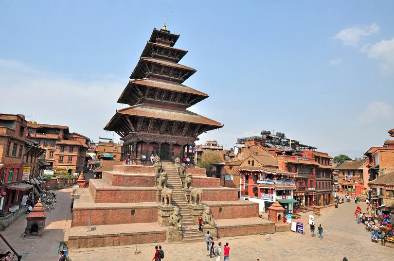
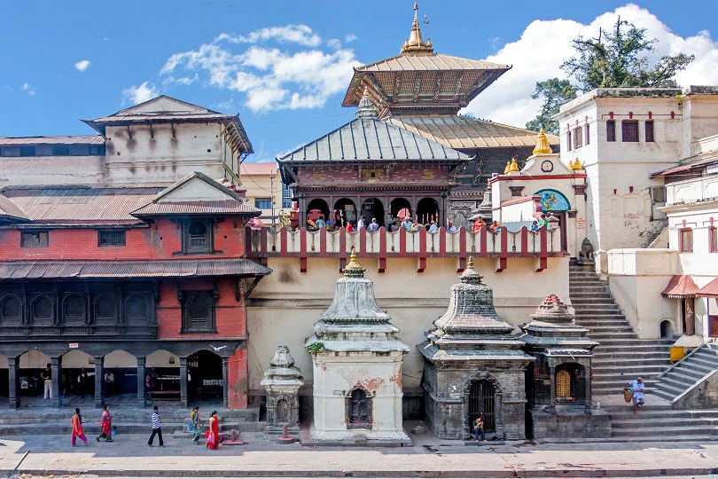
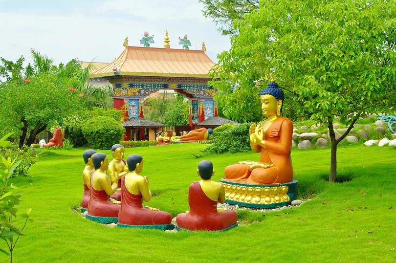

Bhaktapur Durbar Square
Located at a distance of just 15kms (or 10 miles) to the east of the capital city, Bhaktapur is an excellent option for a day or weekend trip from Kathmandu. A UNESCO world cultural heritage site, the Durbar Square (Royal Plaza) is the epicentre of this ancient Newari city. The square is indeed a living museum. You can see plenty of ancient monuments, buildings, and temples where ever you turn. If the weather cooperates, you can experience panoramic views of the Himalayan peaks from Nagarkot, a tiny hill-station village that lies near Bhaktapur. If you get the chance, try a home-stay to experience authentic Nepalese hospitality and you will get to enjoy the flavours of traditional home-cooked meals.

Shree Pashupatinath Temple
This is the largest Hindu temple in the world devoted to Lord Shiva. It is one of the famous Nepal’s Historical sites and is a UNESCO World Cultural Heritage site. The temple is situated on the banks of the river Bagmati and lies at a distance of 5 kms to the northwest of the capital city Kathmandu. Shree Pashupatinath temple is often referred to as the “Temple of Living Beings,” as it attracts a vast number of pilgrims every day who come from faraway places to offer their prayers and seek blessings of the divine deity. Apart from its religious importance, this temple complex is a stunning example of ancient architectural prowess. Shivratriand the Bhagmati riverside are two of the most important event and riverside to watch at this temple.
Boudhanath Stupa
The Bodhnath or Boudhanath Stupa is one of the largest Tibetan Buddhists stupas outside of Tibet. It’s located at a distance of 7 km from Kathmandu and both locals and foreign pilgrims (especially from Tibet) visit this spiritual site. A UNESCO world cultural heritage site, this is one of the top places of Historical Importance in Nepal. Constructed by King Man Dev in the fifth century, this colossal stupa is built atop an octagonal structure, which symbolizes Buddha’s teachings. It is surrounded by several gompas or smaller temples. As soon as you enter the complex, the fragrance of incense embraces you and you can hear the prayer wheels creak, as the monks stroll around the base of the stupa. It is open throughout the day.
